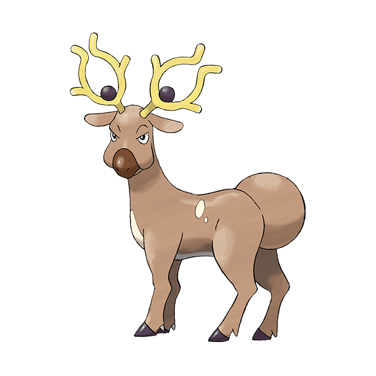

<body><div class="img-box" style="float:right;"></div><h1>惊角鹿</h1>
<h3><span 外貌"></span><span -headline" .E5.A4.96.E8.B2.8C">外貌</span></h3>
<p>惊角鹿全身呈棕色，圆环形的角中间有一个黑色的球。
</p>
<h4><span 性别差异"></span><span -headline" .E6.80.A7.E5.88.AB.E5.B7.AE.E5.BC.82">性别差异</span></h4>
<p>惊角鹿没有性别差异。
</p>
<h3><span 特殊能力"></span><span -headline" .E7.89.B9.E6.AE.8A.E8.83.BD.E5.8A.9B">特殊能力</span></h3>
<p>惊角鹿可以制造幻影。角的曲度可以微妙地改变周围空气的流动，制造出一个神奇的空间。
</p>
<h3><span 性情"></span><span -headline" .E6.80.A7.E6.83.85">性情</span></h3>
<h3><span 栖息地"></span><span -headline" .E6.A0.96.E6.81.AF.E5.9C.B0">栖息地</span></h3>
<p>主要生活在<a  title="城都地区">城都地区</a>，在<a  title="缘朱市">缘朱市</a>附近比较常见。
</p>
<h3><span 饮食"></span><span -headline" .E9.A5.AE.E9.A3.9F">饮食</span></h3>
<dl><dd><i>主頁面：</i><i><a  title="宝可梦食物">宝可梦食物</a></i></dd></dl>
</body>